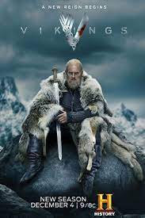

- Prison Break
- Vikings
- Game of Thrones
Büyük Kaçış (Orijinal adı: Prison Break), ABD yapımı bir aksiyon dizisi. Hikâyesi Paul Scheuring tarafından ortaya atılmış ve FOX şirketi tarafından 2005 yılında dizi olarak hayatına adım atmıştır. Dizi genel olarak işlemediği bir suçtan dolayı idam cezası almış Lincoln Burrows (Dominic Purcell)'u ve Lincoln'ün kardeşi Michael Scofield (Wentworth Miller)'ın kardeşini kurtarmak için tüm yasal yolların tükendiğini fark edip onu hapishaneden çıkarmak için bir kaçış planı yapması ve sonrasında gelişen olayları konu alır. Dizinin yapımcılığını Adelstein-Parouse Productions, Original Television ve 20th Century Fox Television işbirliğiyle üstlenmiştir.

Vikings, "Vikingler" tarihsel drama türünde bir Kanada-İrlanda ortak yapımı televizyon dizisi.Yazarlığını ve yapımcılığını Michael Hirst'in yaptığı dizi History kanalında yayınlanmaktadır. ABD ve Kanada'da 3 Mart 2013 günü yayına başlamıştır.
İrlanda'da filme alınan Vikings, Viking Ragnar Lodbrok'un hayatı ve hikâyelerinden esinlenilmiştir. Ragnar Lodbrok, en bilindik İskandinav mitolojisinin kahramanı ve kötü şöhretli Fransa ve İngiltere'nin belalısı hâline gelmiştir. Bir Viking çiftçi olarak canlandırılan Ragnar, İngiltere'ye yaptığı ilk baskınları kardeşi Rollo ve karısı savaşçı Lagertha ile birlikte gerçekleştirmiştir.
Game of Thrones (Türkçe: Taht Oyunları), David Benioff ve D. B. Weiss tarafından yaratılan ve HBO'da yayımlanan Amerikan fantastik televizyon dizisidir. George R. R. Martin'in epik fantezi serisi Buz ve Ateşin Şarkısı'ndan uyarlanmış olan dizi, adını serinin ilk kitabından almaktadır. İngiltere, Kanada, Hırvatistan, İzlanda, Malta, Fas ve İspanya'da çekilmiştir. İlk bölümü 17 Nisan 2011'de HBO üzerinden yayımlanmış ve sekiz sezon süren yetmiş üç bölümün ardından 19 Mayıs 2019'da sona ermiştir.